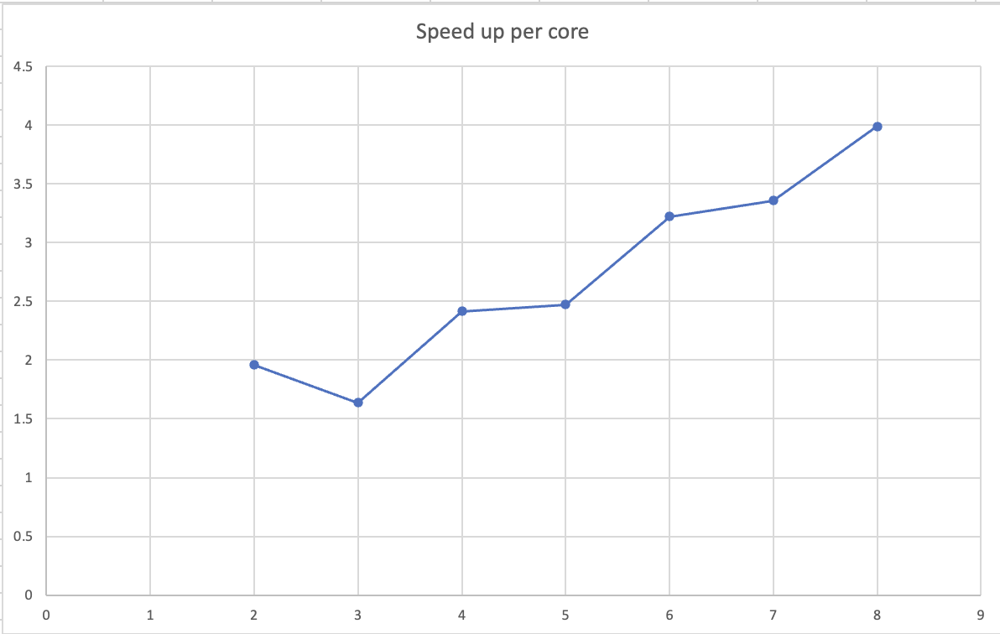

![smiley]()
Xavier Gonzalez: xavier18@stanford.edu JS Paul: jspaul@stanford.edu
The speed-up is not linear n the number of threads used because of a thread-imbalance (just looking at the mandelbrot image, you can see that more work is being done by the threads in white regions where more iterations are required to find a result). We have imbalance becasue we split the entire image up into even sections for each thread, even though some sections had more white regions than others.

Example output from running with 3 threads:
Number of threads: 3 Thread 0 finished in 77.339309 ms Thread 2 finished in 77.798036 ms Thread 1 finished in 236.783834 ms
The measurements show that we have worker imbalance (which as argued can explain our non-linear speedup). We see imbalance because some parts of the image require more work than others (non uniform work distribution) (indeed the middle, whiter region in view 1 which is captured by thread 1, takes the longest here). This is key because we split the image up into even sections in our first approach for each thread to tackle.
We break the image into multiple rows. Then each thread i takes on the row r for which r mod the number of threads equals i. This means each thread takes on some rows across all numThread sections of the image. In this way, we avoid worker imbalance. Indeed, we see a 7.19x speed-up with 8 threads now.
Example output from running with 3 threads now:
Number of threads: 3 Thread 1 finished in 131.051347 ms Thread 2 finished in 131.323872 ms Thread 0 finished in 131.573424 ms
Now we see that the threads finish at roughly the same time implying less worker imbalance. This works because now we more uniformly spread out the work across the entire image across each thread. This means each thread takes on a representative sample of work to do across the whole image.
Only 7.08 speed up with 16 threads. This is because the specs only support 8 hardware threads, so the OS is spawning, managing, and context switching between these concurrent threads (thread clashing) causing a descrease in performance.
****************** Printing Vector Unit Statistics *******************\n Vector Width: 2\n Total Vector Instructions: 162515\n Vector Utilization: 79.8%\n Utilized Vector Lanes: 259245\n Total Vector Lanes: 325030\n ************************ Result Verification *************************\n Passed!!!
****************** Printing Vector Unit Statistics *******************\n Vector Width: 4\n Total Vector Instructions: 94571\n Vector Utilization: 72.1%\n Utilized Vector Lanes: 272563\n Total Vector Lanes: 378284\n ************************ Result Verification *************************\n Passed!!!
****************** Printing Vector Unit Statistics *******************\n Vector Width: 8\n Total Vector Instructions: 51627\n Vector Utilization: 68.1%\n Utilized Vector Lanes: 281255\n Total Vector Lanes: 413016\n ************************ Result Verification *************************\n Passed!!!
****************** Printing Vector Unit Statistics *******************\n Vector Width: 16\n Total Vector Instructions: 26967\n Vector Utilization: 66.3%\n Utilized Vector Lanes: 285887\n Total Vector Lanes: 431472\n ************************ Result Verification *************************\n Passed!!!
We see that utilization goes down as vector width increases. This is likely due to the fact that as vector width increses, there is probably an exponent value that is much larger than the rest and that results in much more computation whilst the others are completed earlier. This leads to the other lanes not doing useful computation more often and reduced vector utilization.
We see a 5.04x speed up from ISPC for view 1 and a 4.36x speedup for view 2.
We might expect at most a speed of 8x under this CPU with ISPC, because of the configuration to emit 8-wide AVX2 vector instructions, and with the ISPC gang implementation of processes that will leverage this functionality.
The ISPC compiler maps gangs of program instances to SIMD instructions executed on a single core. However, these instances may not be well balanced within the SIMD lanes. Notably for instance at boundaries between white and black regions in the Mandelbrot image, there are regions which will require less iterations to finalize and others that will require more. Since SIMD involves masking off lanes that are done (earlier to the ones still working), this actually means we are not fully utilzing all the lanes, explaining why we fail to see the full 8x theoretical speedup.
On view 1, we see a 9.88x speedup from task ISPC. This is 1.96x the speedup we saw from ISPC without partitioning (which as said in part 1 is just a 5.04x speedup).
We have 4 cores which can each do 2 threads at any one time. This means we can have 8 threads running at any one time. However, if we only create 8 tasks, then if one task is more computationally intensive than the others, we will have worker imbalance and not all threads will be fully utilized. Thus, to balance out the work and to ensure we always have cores working, we can create more tasks than threads.
I was worried about overhead from task spawning, management, and scheduling so I initially picked 2 tasks per thread so 16 tasks and this saw a speedup of: 32.13x.
Then, I experimented with 32 tasks to see if having 4 tasks per thread would help. this saw a speed up of: 32.75x which is better.
I then explored values in between. I found that for 20 tasks, I got the best speedup of 33x.
This implies to me that 20 tasks (or about 2.5 tasks per thread) is a good number as it balances out the work well to ensure all cores are working whilst not creating too many tasks such that task-associated overhead becomes too significant.
NB: note that for <20 tasks, I saw an increase in speed up as I increased tasks. For instance, for 8 tasks I saw a speed up of 19.29x, which jumps to 32.13x for 16 tasks.
A thread is a process that can be scheduled and run by the OS. Threads have their own program counter, registers, and stack.
The ISPC task is a job which can be scheduled to be completed by worker threads. Each ISPC task works with SPMD, such that each thread that runs an ISPC task is running the program specified by the task with SIMD properties and speedup.
Launching 10,000 threads is expensive and inefficient, because the OS has to manage and schedule all these threads. Creating threads is expensive as they have their own program counter, registers, and stack. This involves a lot of overhead and can induce significant thread clashing.
Conversely, launching 10,000 tasks is cheaper and more efficient, because the OS still handles its own few threads, which run the queued ISPC tasks. The overhead is less because the OS is tasks are easier to spawn, create, and manage than threads.
Thus tasks act as a more lightweight and efficient way to get work done in parallel.
We see a 4.36x speedup with ISPC no tasks.
We see a 31.62x speedup with ISPC tasks.
Multicore parallelization therefore gives us a 31.62/4.36 = 7.25x speedup from using tasks.
Playing around, I saw a best case speedup of 6.32x with no-task ISPC and 38.79x with task ISPC, when I made all elements in values equal to 2.998f (the value which requires the most work and thus for which parallelization is most helpful).
This improves SIMD speed-up because we are ensuring that all lanes in the SIMD instructions are being fully utilized at the same time since they are doing the same computation and work. 2.998f is also more work than a value like .001f, so we are ensuring that that multiprocessing is useful here, with the cores constantly at work, not idling, and the overhead associated with parallelization now worth it.
I saw a worst case speedup when I made every 8th value in the array equal to 2.998f (the most work) and the rest equal to 1.f (the least work). This saw a speedup of 0.89x from the ISPC no-task, and a 5.98x speedup with tasks. This really slows things down because now in each SIMD instruction, one lane is taking up most of the computation, with the others often masked out. This means we are not fully utilizing the SIMD lanes, greatly reducing our speedup.
I observe a 1.05x speed up from the use of tasks.
This implies to me that tasks are not very useful here!
I suspect, this cannot be substantially improved to be linear with the number of cores, because it seems to me that this is a memory limited task where memory bandwidth is the bottleneck.
Consider that we do 2 floating point operations per task. Next consider that we load 2 * 4 bytes and write 4 bytes per task (using that a float is 4 bytes).
This is equivalent to 2 flops for every 12 bytes of memory read/written. This indicates that memory bandwidth is key and the limiting factor here not computation. If task speed up is just 1.05x even following parallelization, we might have well hit the memory bandwith saturation point.
When writing the 4 byte result, we first write it into the Cache memory. This accounts for 4 bytes.
Eventually, the result will not be used for sufficiently long such that it is flushed out of the cache memory. This accounts for another 4 bytes.
In total this means reading is actually taking up 8 bytes, not 4! This explains the multiplication by 4 and not 3.
The original program had a runtime of 9008.047 ms.
Writing code to track time reveals most of the compute is spent on computing assignments in the k-means algorithm (see below).
Total time spent computing assignments: 6.163077 seconds
Total time spent computing centroids: 0.987493 seconds
Total time spent computing costs: 1.842930 seconds
Therefore, the computeAssignments(&args) call takes up most of the time!
Consequently, since we can only parallelize one function, we shall parallelize computeAssignments().
We shall parallelize over M as this is the largest value, and thus something we can most effectively tackle with 8 threads. In other words, we shall conceptually parallelize over the data points.
(M=1000000, N=100, K=3, epsilon=0.100000)
This now has a runtime of 4837.763ms.
This is not quite a 2.1x speedup. I tried also moving minDist memory allocation away from thread to reduce memory allocation calls, but this did not help improve speed significantly.
Then looking at the hint in the problem, I realized, look how small K is! We should loop over the points and then the clusters instead of vice versa given how small K is. This enables us to read each point (and its 100 features) once and keep it in cache memory whilst we compute the K distances. This change gave me a significant speedup!
Now the code runs in 3771.586 ms.
This is a speedup of 9008.047/3771.586 = 2.39x (>2.1 required)!